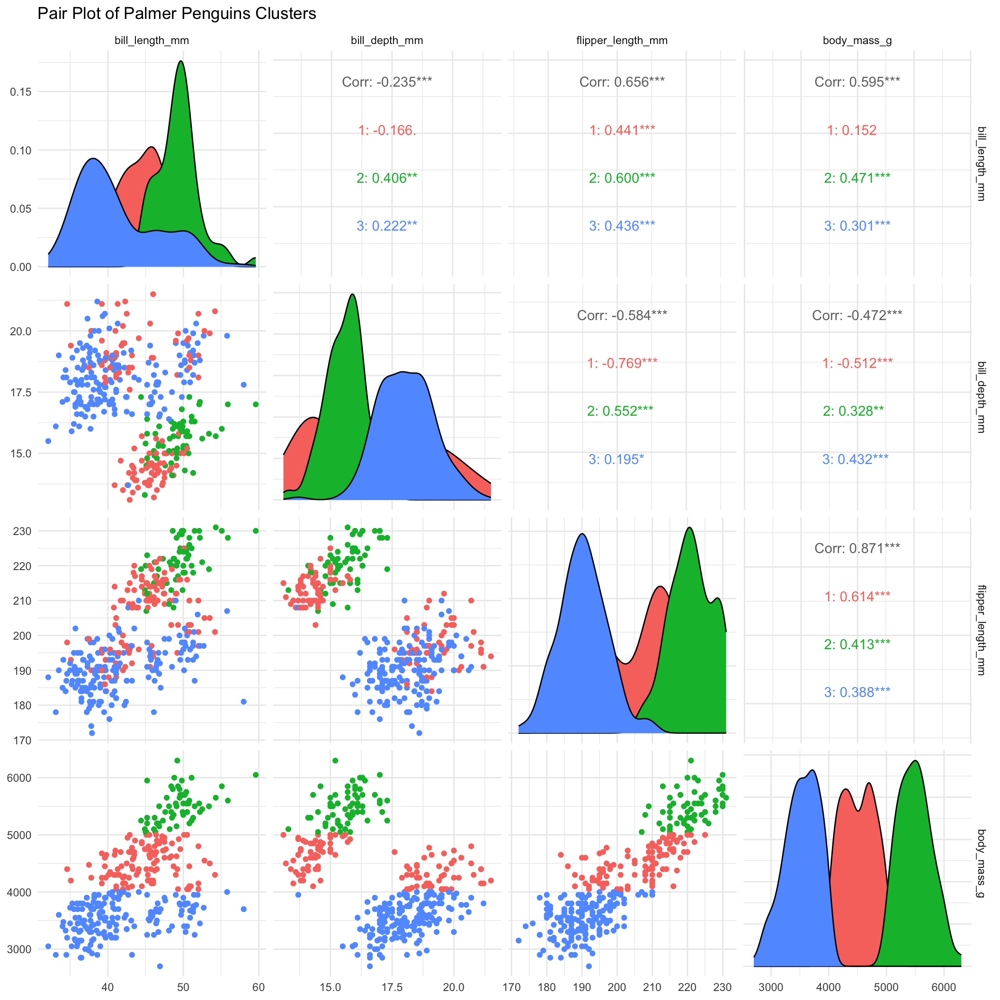
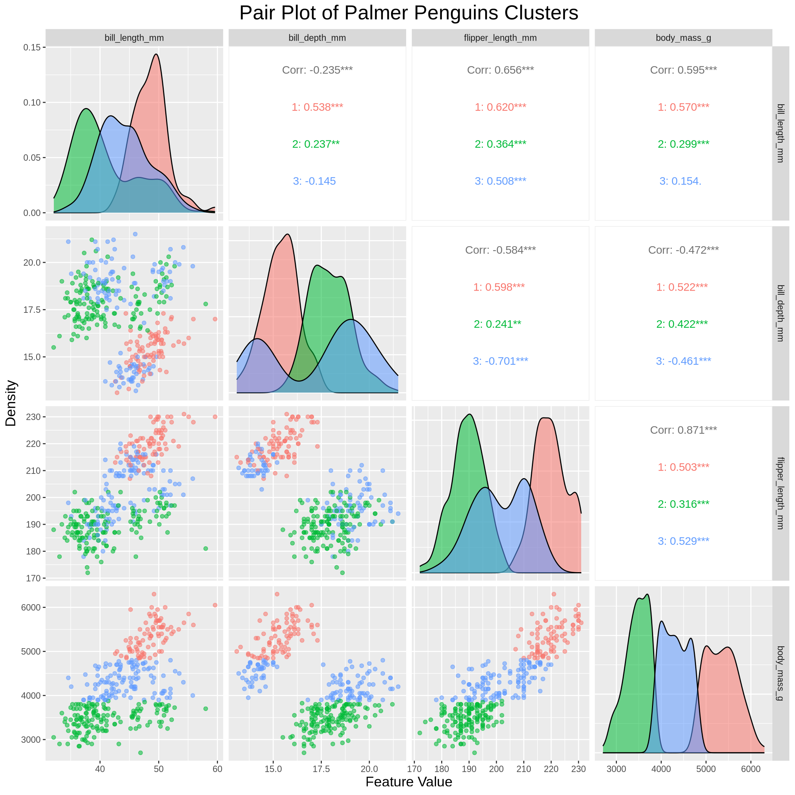

library(palmerpenguins)
library(tidyverse)
library(cluster)
library(gridExtra)
library(grid)
library(GGally)
library(FactoMineR)
library(factoextra)Segmentation Methods
Let’s ask to CoPilot: What is segmentation, and k-means clustering? and why is it important to marketing analytics?
Segmentation is the process of dividing a market into distinct groups of consumers who have similar needs, preferences, or behaviors. By segmenting the market, companies can better understand their customers and tailor their marketing strategies to meet the specific needs of each segment. This allows companies to target their marketing efforts more effectively and efficiently, leading to increased customer satisfaction and loyalty.
k-means clustering is a popular method used in segmentation analysis to group similar data points into clusters based on their attributes. The algorithm works by iteratively assigning data points to the nearest centroid and updating the centroids based on the mean of the data points in each cluster. This process continues until the centroids no longer change significantly, resulting in well-defined clusters.
Why is segmentation important to marketing analytics? Segmentation allows companies to identify and target specific customer segments with tailored marketing messages and offers. By understanding the unique needs and preferences of each segment, companies can create more personalized marketing campaigns that resonate with their target audience. This leads to higher conversion rates, increased customer engagement, and improved overall marketing performance.
K-Means
Now then, I will develop custom code to implement the k-means clustering algorithm, allowing visualization of the algorithm’s iterative process through plots at each significant step. This will include visualizing the initial random centroid placement, subsequent updates of centroids, and cluster assignment changes. After implementing the algorithm, I will apply it to the PalmerPenguins dataset as a test case.
To validate the effectiveness and accuracy of the custom implementation, I will compare its clustering results with those obtained from the built-in kmeans function available in R. This comparison will highlight the performance and potential differences in the clustering outcomes between the custom and built-in methods.
Data
palmerpenguins::penguins %>%
head(10) %>%
knitr::kable()| species | island | bill_length_mm | bill_depth_mm | flipper_length_mm | body_mass_g | sex | year |
|---|---|---|---|---|---|---|---|
| Adelie | Torgersen | 39.1 | 18.7 | 181 | 3750 | male | 2007 |
| Adelie | Torgersen | 39.5 | 17.4 | 186 | 3800 | female | 2007 |
| Adelie | Torgersen | 40.3 | 18.0 | 195 | 3250 | female | 2007 |
| Adelie | Torgersen | NA | NA | NA | NA | NA | 2007 |
| Adelie | Torgersen | 36.7 | 19.3 | 193 | 3450 | female | 2007 |
| Adelie | Torgersen | 39.3 | 20.6 | 190 | 3650 | male | 2007 |
| Adelie | Torgersen | 38.9 | 17.8 | 181 | 3625 | female | 2007 |
| Adelie | Torgersen | 39.2 | 19.6 | 195 | 4675 | male | 2007 |
| Adelie | Torgersen | 34.1 | 18.1 | 193 | 3475 | NA | 2007 |
| Adelie | Torgersen | 42.0 | 20.2 | 190 | 4250 | NA | 2007 |
# Load the dataset and select only numeric columns
data <- palmerpenguins::penguins %>%
select_if(is.numeric) %>%
na.omit()
data %>%
head(10) %>%
knitr::kable()| bill_length_mm | bill_depth_mm | flipper_length_mm | body_mass_g | year |
|---|---|---|---|---|
| 39.1 | 18.7 | 181 | 3750 | 2007 |
| 39.5 | 17.4 | 186 | 3800 | 2007 |
| 40.3 | 18.0 | 195 | 3250 | 2007 |
| 36.7 | 19.3 | 193 | 3450 | 2007 |
| 39.3 | 20.6 | 190 | 3650 | 2007 |
| 38.9 | 17.8 | 181 | 3625 | 2007 |
| 39.2 | 19.6 | 195 | 4675 | 2007 |
| 34.1 | 18.1 | 193 | 3475 | 2007 |
| 42.0 | 20.2 | 190 | 4250 | 2007 |
| 37.8 | 17.1 | 186 | 3300 | 2007 |
Custom K-Means Implementation
# Function to implement k-means
kmeans_custom <- function(data, k, max_iter = 100) {
n <- nrow(data)
p <- ncol(data)
centers <- data[sample(1:n, k), ]
clusters <- rep(0, n)
for (iter in 1:max_iter) {
# Assign clusters
for (i in 1:n) {
distances <- apply(centers, 1, function(center) sum((data[i, ] - center)^2))
clusters[i] <- which.min(distances)
}
# Update centers
new_centers <- matrix(NA, ncol = p, nrow = k)
for (j in 1:k) {
new_centers[j, ] <- colMeans(data[clusters == j, , drop=FALSE])
}
# Check for convergence
if (all(centers == new_centers, na.rm = TRUE)) break
centers <- new_centers
}
list(centers = as.data.frame(centers), clusters = clusters)
}Visualization of K-Means Algorithm
# Set parameters
k <- 3
result <- kmeans_custom(data, k)
# Rename columns of the centers to match the original data
colnames(result$centers) <- colnames(data)
# Add the cluster results to the data
data$cluster <- factor(result$clusters)
data %>%
head(10) %>%
knitr::kable()| bill_length_mm | bill_depth_mm | flipper_length_mm | body_mass_g | year | cluster |
|---|---|---|---|---|---|
| 39.1 | 18.7 | 181 | 3750 | 2007 | 3 |
| 39.5 | 17.4 | 186 | 3800 | 2007 | 3 |
| 40.3 | 18.0 | 195 | 3250 | 2007 | 3 |
| 36.7 | 19.3 | 193 | 3450 | 2007 | 3 |
| 39.3 | 20.6 | 190 | 3650 | 2007 | 3 |
| 38.9 | 17.8 | 181 | 3625 | 2007 | 3 |
| 39.2 | 19.6 | 195 | 4675 | 2007 | 2 |
| 34.1 | 18.1 | 193 | 3475 | 2007 | 3 |
| 42.0 | 20.2 | 190 | 4250 | 2007 | 2 |
| 37.8 | 17.1 | 186 | 3300 | 2007 | 3 |
ggpairs(data, columns = 1:4, aes(color = cluster)) +
ggtitle("Pair Plot of Palmer Penguins Clusters") +
theme_minimal()
# Plot the initial data with random centroids
ggplot(data, aes(x = bill_length_mm, y = bill_depth_mm, color = cluster)) +
geom_point() +
geom_point(data = result$centers, aes(x = bill_length_mm, y = bill_depth_mm), color = "black", size = 5) +
ggtitle("Initial Data with Random Centroids") +
theme_minimal()
What is PCA?
- PCA (Principal Component Analysis) is a dimensionality reduction technique that is commonly used in data analysis to identify patterns and relationships in high-dimensional data.
Why is it benefitial to use PCA before clustering?
- Because it reduces the dimensionality of the data by transforming the original features into a new set of uncorrelated variables called principal components. This transformation helps to capture the most important information in the data while removing noise and redundancy. By reducing the number of dimensions, PCA simplifies the data and makes it easier to visualize and interpret. This can improve the performance of clustering algorithms by reducing the computational complexity and enhancing the clustering results. Additionally, PCA can help to identify the most relevant features that contribute to the clustering process, leading to more accurate and meaningful cluster assignments.
# Perform PCA
pca_result <- PCA(data[, 1:4], graph = FALSE)
# Ensure PCA and clustering results are combined correctly
pca_data <- data.frame(pca_result$ind$coord)
pca_data$cluster <- data$cluster
# Plot PCA results
fviz_pca_ind(pca_result,
geom.ind = "point",
col.ind = pca_data$cluster,
palette = "jco",
addEllipses = TRUE,
legend.title = "Clusters") +
ggtitle("PCA of Palmer Penguins Clusters")
todo: Compare your results to the built-in kmeans function in R.
todo: Calculate both the within-cluster-sum-of-squares and silhouette scores (you can use built-in functions to do so) and plot the results for various numbers of clusters (ie, K=2,3,…,7). How many clusters are suggested by these two metrics?